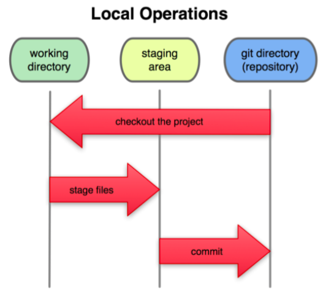
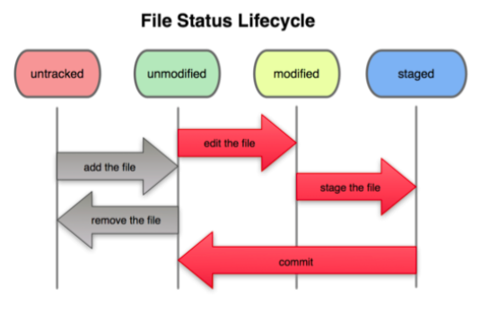
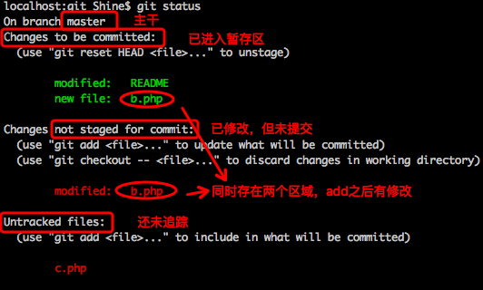
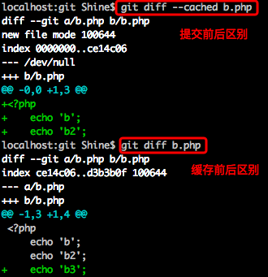
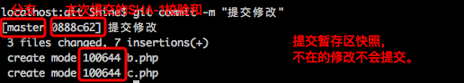

参考书目：Pro Git 2
Git代码的工作区域：
working(工作目录)、staging(暂存区)、repository(代码仓库)

安装：
mac下直接brew即可。
基本配置：
配置目录：
/etc/gitconfig：所有用户的配置。git config - -system
~/.gitconfig：当前用户的配置。git config - -global
path/.git/config：当前目录的配置。相同配置项，下级会覆盖上级。
可以使用：git config命令配置属性（git config - -list查看当前配置信息，当有重复项时，下面的覆盖上面的）
用户名：git config - -global user.name shine
邮箱：git config - - global user.email ihuangshuai@gmail.com
文本编辑器：git config - -global core.editor vim
冲突时，差异分析工具：git config - -global merge.tool vimdiff
帮助：git help [cmd]。如git help config
开始一个git仓库：
1.初始化
git init
2.clone已有(git clone [url])
支持git、http(s)等等协议
文件状态：
未跟踪(untracked)、未修改(unmodified)、已修改(modified)、已暂存(staged)、仓库(repertory)

git add file（多功能命令）
开始跟踪新文件、把已跟踪的文件放到暂存区、合并时把冲突文件标记为已解决
一个文件可能同时存在to be commit 和 modified区域。因为每次add命令都会暂存当时的版本。下次的修改算是另外一个版本，需要重新add。
在git中，目录不再纳入版本控制，即所有文件是包含了目录的！
git status：查看当前目录文件状态

git diff [file]：比较已暂存和未暂存的文件的区别。即暂存前后的区别
git diff - -{cached,staged} [file]：比较暂存区和库中的文件区别。即提交前后的区别。注意，flag:cached放在文件之前。

git commit [-m “comment”]：提交代码到repertory代码库，无-m时，启动编辑器(config里面的core.editor可指定)编辑注释。与svn类似。

git commit -a [-m ‘comment’]：(已跟踪)跳过暂存区，直接提交。即提交暂存区和修改区的文件。不可指定单独一个文件！！！
但是未追踪的文件无法一次提交。至少需要add一次。
.gitignore文件：忽略一些文件，不需要git管理，不进入未跟踪文件列表。如日志编译等自动生成文件。
文件格式规范：
-
注释：#开头
-
可使用glob模式匹配
-
匹配模式最后跟反斜杠(/)说明要忽略的是目录，如：build/ #忽略build/目录下的所有文件
-
模式前加(!)取反
git rm [file]：移除文件
工作目录和版本库中的均删除：
rm a.php //先删除本地文件
git rm a.php //删除版本库中文件
git commit -m ‘rm a.php’ a.php //提交删除，若删除之前修改过并已放到暂存区域的话，则必须要用强制删除-f。
仅仅从版本库中删除，保留工作目录文件：
git rm - -cached file：可使用glob模式。如：git rm \*~：反斜杠是不使用glob模式，而是git自带的模式，其中*表示递归匹配所有
git commit -m ‘rm file’ file：需要提交
git commit - -amend -m ‘comment'：修改上一次提交，即把缓存区的内容添加到此次提交（合并为一个提交）
git mv from to：移动文件
类似运行如下三个命令，当执行完下面三个操作之后，git会自动识别出来是一次rename操作：
mv from to
git rm from
git add to
日志
git log：查看提交历史：
选项：
-p：显示每次提交具体的文件修改内容。
- - stat：仅显示简要的增改行数统计
- - pretty：指定展示格式，
如：oneline(每次提交展示一行)，short()，full()，fuller()，
format：自定义展示的记录格式，方便后期提取分析，git log - -pretty=format:”%h - %an,%ar : %s"
%H：提交对象(commit)的完整哈希字串
%h：提交对象的尖端哈希字串
%an：修改者名
%ae：修改者者邮箱
%ad：修改时期(可使用-date=选项定制格式)
%cn：提交者名
%ce：提交者邮箱
%cr：提交日期
%s：提交说明
提交者和修改者的区别：修改者是修改文件的人，而提交者是将修改合并入项目(主干)的人。
限制&检索：
-<n>：如：-2，显示最近的两次更新
- - since/until：如，git log - -since=2.weeks
- -author
- -grep
- -all-match：符合检索条件
路径和选项中间要用- -，隔开。
撤销：
撤销暂存区内容：git reset HEAD e.php （git status中有介绍）
撤销对文件的修改(修改之前的版本)：git checkoup - - <file>
远程库：
git remote：展示远程库的名称，-v：展示远程库对应的地址。每个git目录维持了一个git远程库的name=>url映射表，当需要操作的时候，直接在命令后面接对应的name即可操作对应的库。而不再需要输入长串的url。
git remote add [shortname] [url]：添加远程仓库
git remote show [remote-name]：查看远程仓库信息
git remote rename old-name new-name：重命名
git remote rm remote-name：删除
远程代码：
git fetch [remote-name]：只是将远端数据拉到本地仓库，并不自动合并到当前工作分支！
从远程仓库中拉取所有你本地仓库中还没有的数据。之后你就可以在本地访问该远程仓库中的所有分支。
如果工作目录是一个clone，则fetch会自动将远程仓库归于origin。即别人的更新。
git pull：
git push [remote-name] [branch-name]：如：git push origin master
标签：
git tag：查看标签名字。
轻量级(lightweight)：指向特定提交对象的引用
含附注的(annotated)：存储在仓库中的独立对象，有自身的校验和信息，包含着标签的名字，邮件、地址、日期、标签说明。
git tag tag-name：轻量级标签。
git tag -a tag-name [-m ‘content’]：添加附注的标签。
git show [tag-name]：展示标签信息。
git tag -s tag-name -m ‘content’：签署标签用你的私钥签署标签。
git tag -v tag-name：验证标签，当有签署者的公钥放在keyring中才能验证
git tag -a tag-name SHA-1校验和（或前几位字符）：可通过git log - -pretty=oneline获取校验和
git push origin [tagname]：将标签推送到服务器端。git push不会推送标签。加上- -tags就会一次推送本地所有标签。
小技巧：
1.git自动提示(shell中的双Tab一样)：
如果你用的是 Bash shell,可以试试看 Git 提供的自动完成脚本。下载 Git 的源 代 码, 进 入 contrib/ completion 目 录, 会 看 到 一 个 git-completion.bash 文 件。 将 此 文件复制到你自己的用户主目录中(译注:按照下面的示例,还应改名加上点:cp git- completion.bash ∼/.git-completion.bash),并把下面一行内容添加到你的 .bashrc 文 件中:
source ~/.git-completion.bash
也可以为系统上所有用户都设置默认使用此脚本。Mac 上将此脚本复制到 /opt/local/ etc/bash_completion.d 目录中,Linux 上则复制到 /etc/bash_completion.d/ 目录中即 可。这两处目录中的脚本,都会在 Bash 启动时自动加载。
2.git命令别名
git别名替换：
git config - -global alias.co checkout
git config - -global alias.br branch
git config - -global alias.ci commit
git config - -global alias.st status
git config - -global alias.unstage ‘reset HEAD --'
git config - -global alias.last ‘log -1 HEAD'
git调用外部命令：在命令前加上！即可：
git config - -global alias.visual ‘!gitk'